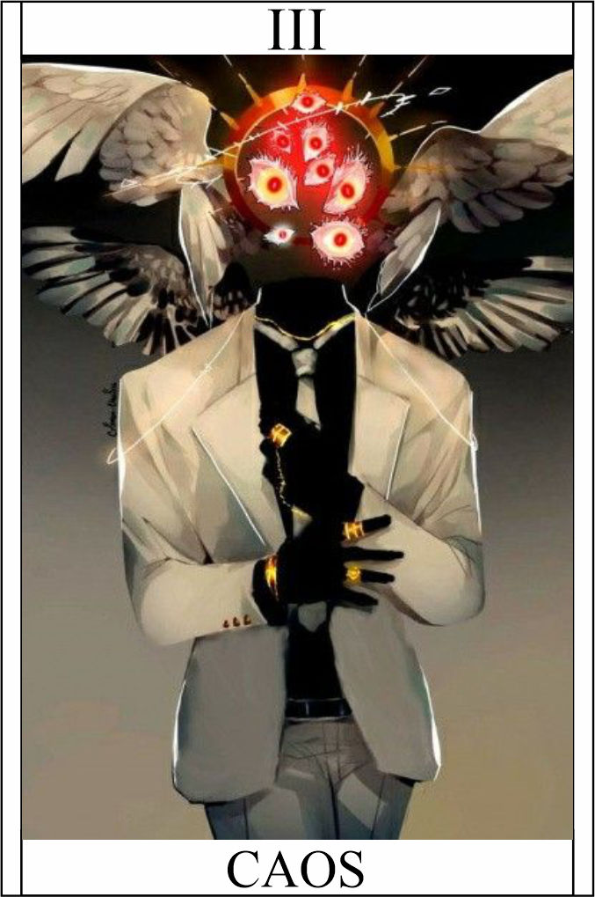

Caos
Têndencia: Neutro Mal
Passiva - Manifestação Caótica
A passiva "Manifestação Caótica" concede ao personagem a capacidade de canalizar e controlar o poder do caos. Essa energia instável e imprevisível afeta suas habilidades e confere efeitos adicionais aos seus ataques e ações. Cada ataque acumula 1 ponto de caos limite 5 (pode ultrapassar).
Legado 1 - Explosão Caótica
Ao ativar a habilidade "Explosão Caótica", o personagem libera uma onda de energia caótica concentrada em uma área específica. Essa explosão causa dano mágico a todos os inimigos dentro do alcance, gerando um efeito aleatório, que pode variar desde atordoamento até confusão ou redução de resistências.
(Destreza + Auto-Controle) + 1 | Consome 1 caos
Condição
O personagem precisa ter acumulado uma certa quantidade de energia caótica, que é gerada ao infligir dano aos inimigos.
Legado 2 - Forma Instável
Ao ativar a habilidade "Forma Instável", o personagem passa por uma transformação temporária, adquirindo uma forma caótica e distorcida. Nessa forma, sua velocidade de movimento e ataques são aumentados, e ele se torna imune a certos efeitos negativos. No entanto, a transformação é instável e consome rapidamente a energia caótica, retornando o personagem ao seu estado normal após um curto período de tempo.
20HP extra, +1 Acerto e +4 dano adicional | Consome 1 caos por turno
Condição para ativar a habilidade:
O personagem precisa estar com sua energia caótica em um nível crítico, indicando uma carga máxima.
Legado 3 - Corrupção Caótica:
Ao ativar a habilidade "Corrupção Caótica", o personagem canaliza o poder do caos diretamente em seu alvo. Isso causa dano mágico continuado ao longo do tempo e reduz as defesas do inimigo, tornando-o mais suscetível a ataques. A intensidade da corrupção aumenta progressivamente, causando danos cada vez maiores e tornando difícil para o inimigo se recuperar.
Causa 3 de dano true por round
Restrição de uso:
O personagem precisa estar enfrentando um inimigo com alta vitalidade ou resistência.
A passiva "Manifestação Caótica" amplifica a imprevisibilidade e o poder do personagem. As habilidades "Explosão Caótica", "Forma Instável" e "Corrupção Caótica" exploram o conceito do caos, oferecendo efeitos aleatórios, transformações temporárias e dano contínuo. As condições para ativar as habilidades garantem que o personagem esteja em situações estratégicas ou enfrentando desafios adequados para aproveitar ao máximo o poder do caos.